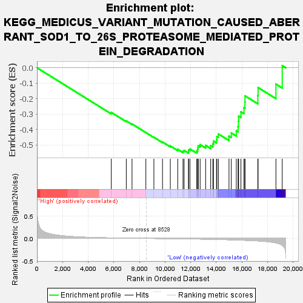
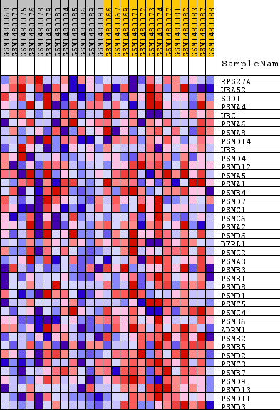
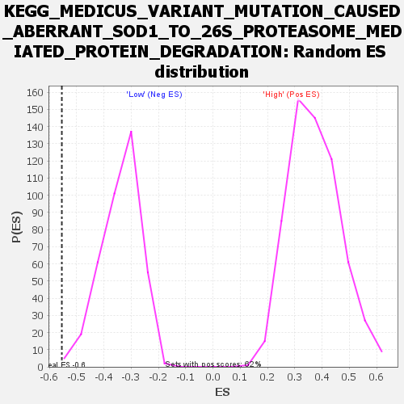

| Dataset | WG6v3.CYGB.cls#High_versus_Low.CYGB.cls#High_versus_Low_repos |
| Phenotype | CYGB.cls#High_versus_Low_repos |
| Upregulated in class | Low |
| GeneSet | KEGG_MEDICUS_VARIANT_MUTATION_CAUSED_ABERRANT_SOD1_TO_26S_PROTEASOME_MEDIATED_PROTEIN_DEGRADATION |
| Enrichment Score (ES) | -0.5540466 |
| Normalized Enrichment Score (NES) | -1.6331875 |
| Nominal p-value | 0.002631579 |
| FDR q-value | 0.22845274 |
| FWER p-Value | 0.697 |

| SYMBOL | TITLE | RANK IN GENE LIST | RANK METRIC SCORE | RUNNING ES | CORE ENRICHMENT | |
|---|---|---|---|---|---|---|
| 1 | RPS27A | RPS27A | 5804 | 0.010 | -0.2898 | No |
| 2 | UBA52 | UBA52 | 6974 | 0.005 | -0.3451 | No |
| 3 | SOD1 | SOD1 | 7422 | 0.004 | -0.3647 | No |
| 4 | PSMA4 | PSMA4 | 8503 | 0.000 | -0.4204 | No |
| 5 | UBC | UBC | 9129 | -0.002 | -0.4508 | No |
| 6 | PSMA6 | PSMA6 | 9804 | -0.004 | -0.4818 | No |
| 7 | PSMA8 | PSMA8 | 10412 | -0.006 | -0.5073 | No |
| 8 | PSMD14 | PSMD14 | 10989 | -0.008 | -0.5292 | No |
| 9 | UBB | UBB | 11401 | -0.010 | -0.5413 | No |
| 10 | PSMD4 | PSMD4 | 11487 | -0.010 | -0.5361 | No |
| 11 | PSMD12 | PSMD12 | 11835 | -0.012 | -0.5433 | Yes |
| 12 | PSMA5 | PSMA5 | 11836 | -0.012 | -0.5325 | Yes |
| 13 | PSMA1 | PSMA1 | 11946 | -0.012 | -0.5269 | Yes |
| 14 | PSMB4 | PSMB4 | 12473 | -0.014 | -0.5407 | Yes |
| 15 | PSMD7 | PSMD7 | 12544 | -0.015 | -0.5306 | Yes |
| 16 | PSMC1 | PSMC1 | 12568 | -0.015 | -0.5180 | Yes |
| 17 | PSMC6 | PSMC6 | 12591 | -0.015 | -0.5052 | Yes |
| 18 | PSMA2 | PSMA2 | 12740 | -0.016 | -0.4982 | Yes |
| 19 | PSMD6 | PSMD6 | 13170 | -0.018 | -0.5037 | Yes |
| 20 | DERL1 | DERL1 | 13563 | -0.020 | -0.5050 | Yes |
| 21 | PSMC2 | PSMC2 | 13732 | -0.021 | -0.4936 | Yes |
| 22 | PSMA3 | PSMA3 | 13781 | -0.022 | -0.4758 | Yes |
| 23 | PSMB3 | PSMB3 | 14017 | -0.023 | -0.4663 | Yes |
| 24 | PSMB1 | PSMB1 | 14050 | -0.023 | -0.4461 | Yes |
| 25 | PSMD8 | PSMD8 | 14165 | -0.024 | -0.4294 | Yes |
| 26 | PSMD1 | PSMD1 | 14992 | -0.031 | -0.4433 | Yes |
| 27 | PSMC5 | PSMC5 | 15172 | -0.032 | -0.4224 | Yes |
| 28 | PSMC4 | PSMC4 | 15564 | -0.036 | -0.4091 | Yes |
| 29 | PSMB6 | PSMB6 | 15704 | -0.037 | -0.3816 | Yes |
| 30 | ADRM1 | ADRM1 | 15730 | -0.037 | -0.3479 | Yes |
| 31 | PSMB2 | PSMB2 | 15746 | -0.038 | -0.3136 | Yes |
| 32 | PSMB5 | PSMB5 | 15925 | -0.039 | -0.2860 | Yes |
| 33 | PSMD2 | PSMD2 | 16163 | -0.042 | -0.2588 | Yes |
| 34 | PSMC3 | PSMC3 | 16236 | -0.043 | -0.2222 | Yes |
| 35 | PSMB7 | PSMB7 | 16243 | -0.043 | -0.1821 | Yes |
| 36 | PSMD9 | PSMD9 | 17244 | -0.057 | -0.1807 | Yes |
| 37 | PSMD13 | PSMD13 | 17264 | -0.057 | -0.1285 | Yes |
| 38 | PSMD11 | PSMD11 | 18658 | -0.101 | -0.1062 | Yes |
| 39 | PSMD3 | PSMD3 | 19150 | -0.156 | 0.0140 | Yes |

